Capacitación - Explosión de Materiales

Al ingresar al módulo de Explosión de Materiales, el sistema mostrará el encabezado principal del proceso:
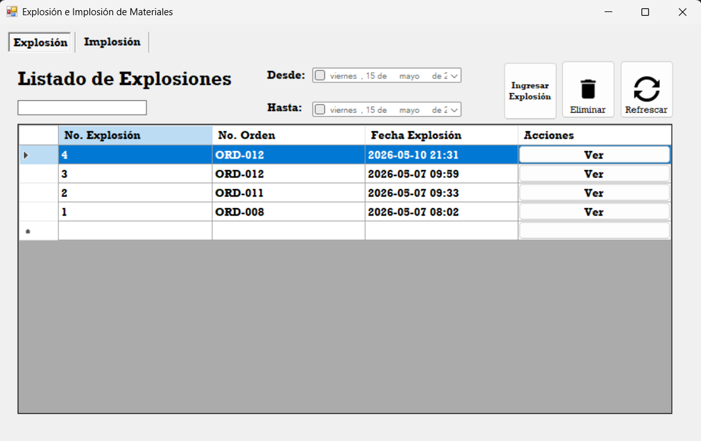
En esta sección se encuentran los filtros disponibles para realizar búsquedas dentro de las explosiones registradas.
El campo de texto permite filtrar por el nombre o número de la Orden Recibida. Asimismo, los filtros de fecha permiten realizar búsquedas dentro de un rango específico de fechas.
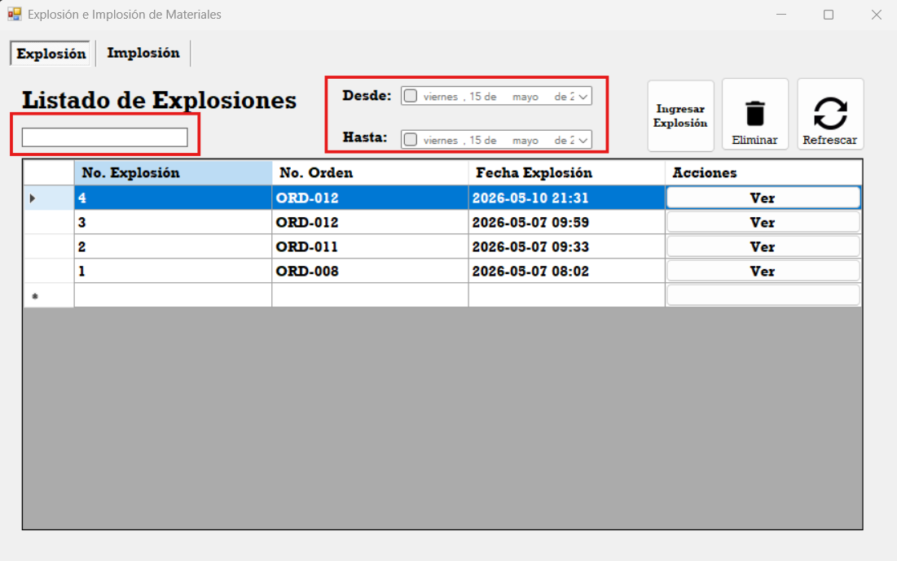
En el Data Grid View se visualizarán todas las explosiones de materiales registradas en el sistema.
Dentro de la tabla se mostrarán los siguientes datos:
No. Explosión: Identificador único de la explosión.
No. Orden: Número de la orden relacionada con la explosión.
Fecha de Explosión: Fecha en la que se realizó el proceso.
Ver: Botón que permite visualizar el detalle completo de la
explosión seleccionada.
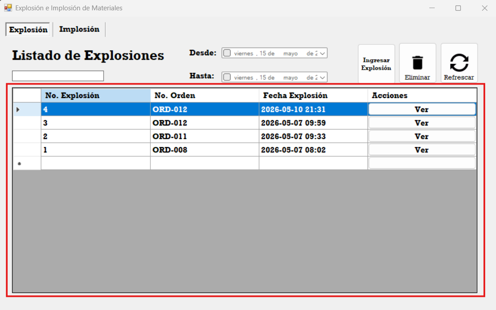
En la parte superior del encabezado se encuentran los botones principales del módulo.
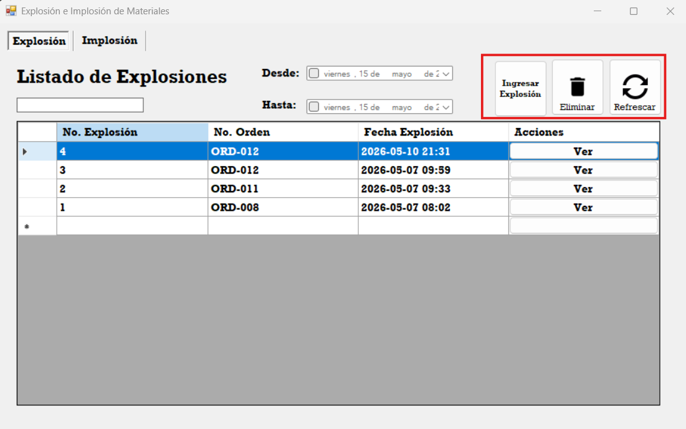
Ingresar Explosión: Permite crear una nueva explosión a partir de
una Orden Recibida.
Eliminar: Permite eliminar una explosión registrada en el
sistema.
Refrescar: Permite limpiar los filtros aplicados y actualizar la
información mostrada en el Data Grid View.
Al presionar el botón Eliminar, el sistema mostrará un mensaje de confirmación antes de eliminar la explosión seleccionada.
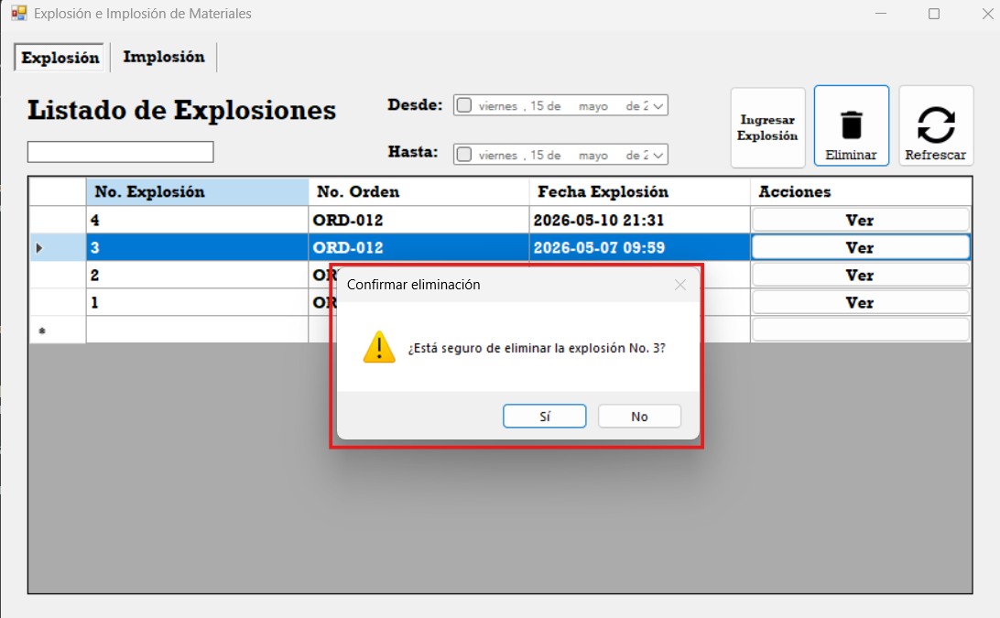
Al presionar el botón de crear explosión, el sistema redireccionará automáticamente al detalle de la explosión de materiales.
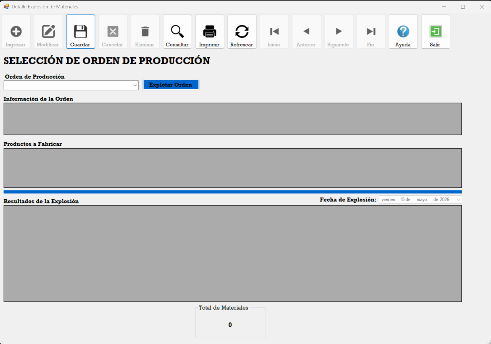
Dentro del detalle se mostrarán únicamente los botones habilitados para realizar el proceso de explosión.
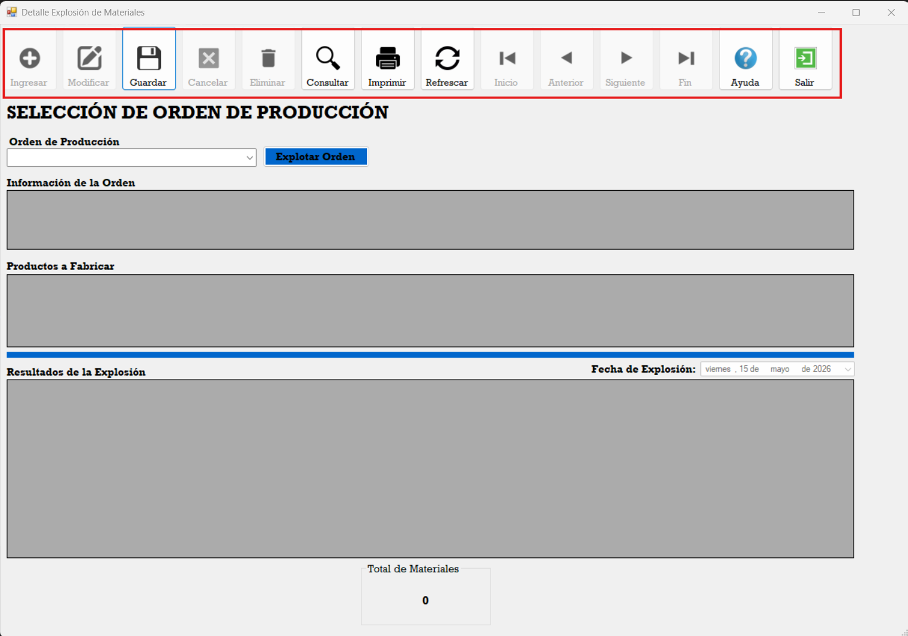
Guardar: Permite guardar la explosión realizada.
Consultar: Permite abrir consultas relacionadas con el módulo.
Imprimir: Genera el reporte de la explosión de materiales.
Refrescar: Limpia los campos y permite realizar una nueva
explosión.
Ayuda: Abre la guía de ayuda del módulo.
Salir: Regresa nuevamente al encabezado principal.
En esta sección se encuentra el ComboBox que permite seleccionar la Orden Recibida que será utilizada para realizar la explosión de materiales.
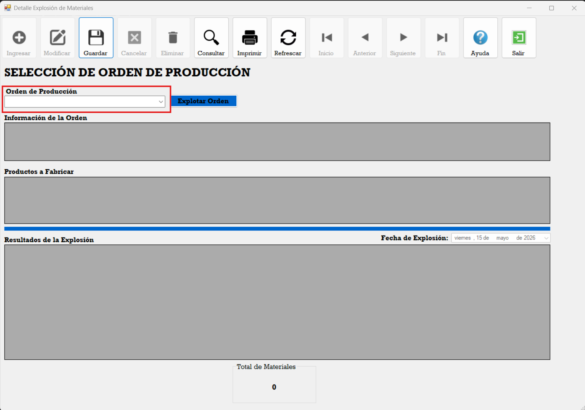
Al seleccionar una Orden Recibida, el sistema cargará automáticamente la información correspondiente de la orden seleccionada.
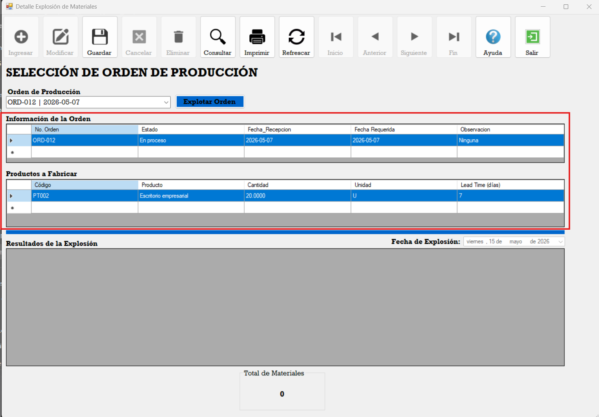
Al presionar el botón Explotar, el sistema realizará el proceso de explosión de materiales de la orden seleccionada.
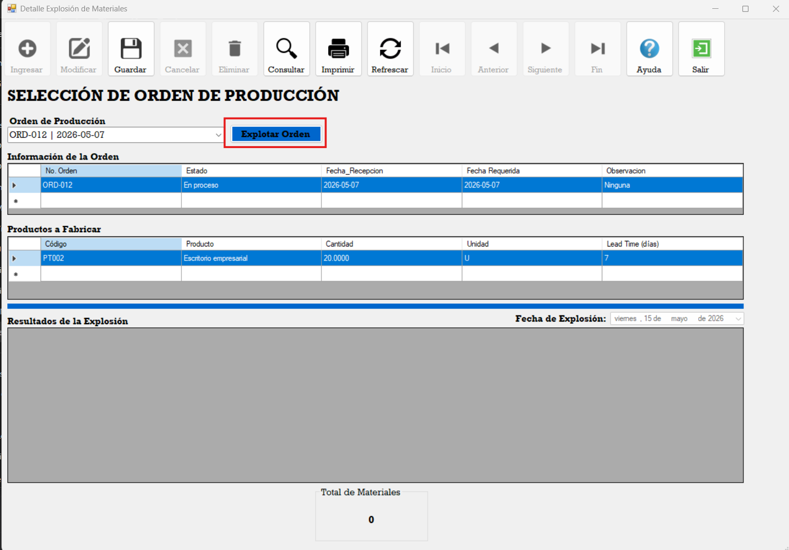
Después de realizar la explosión, el sistema mostrará automáticamente los cálculos realizados dentro del Data Grid View.
Asimismo, en la parte inferior se visualizará la cantidad total de materiales explotados de manera individual.
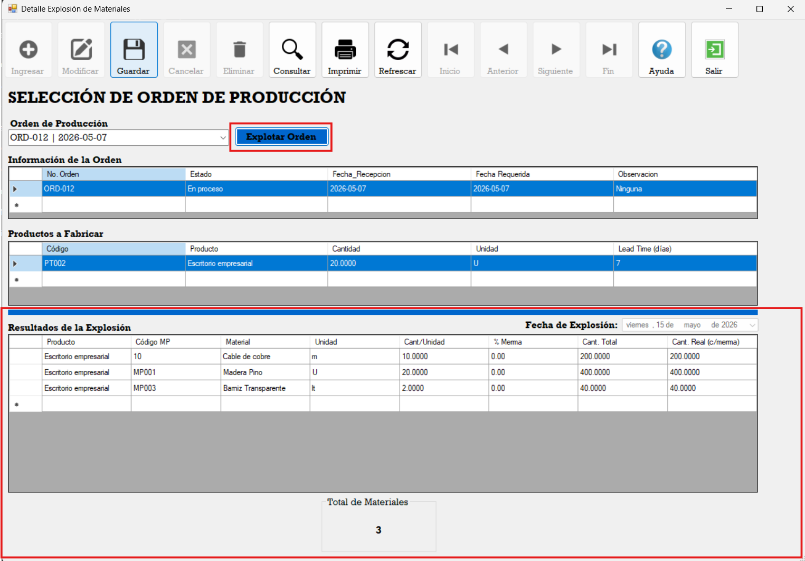
Una vez finalizado el proceso, se deberá presionar el botón Guardar para registrar la explosión en el sistema.
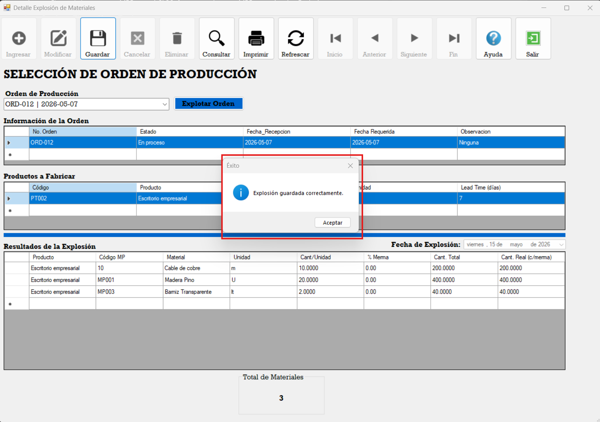
Posteriormente, el sistema mostrará un mensaje indicando que la explosión fue guardada correctamente.
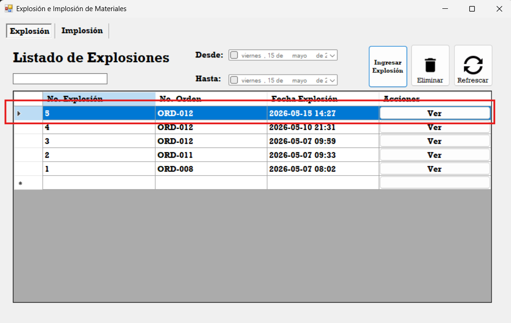
Al regresar al encabezado principal, se podrá visualizar la explosión registrada dentro del Data Grid View.
Al presionar el botón Ver, el sistema abrirá nuevamente el detalle de la explosión mostrando toda la información previamente guardada.
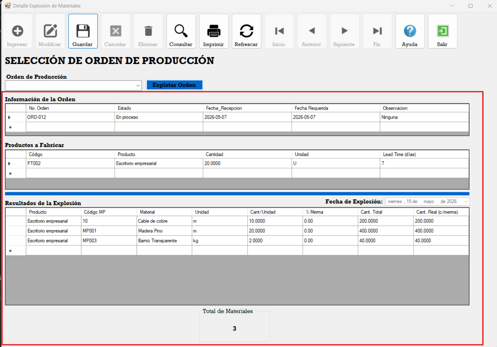